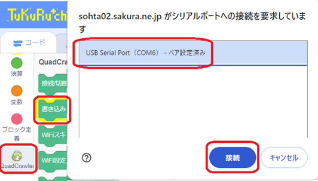
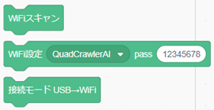
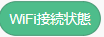
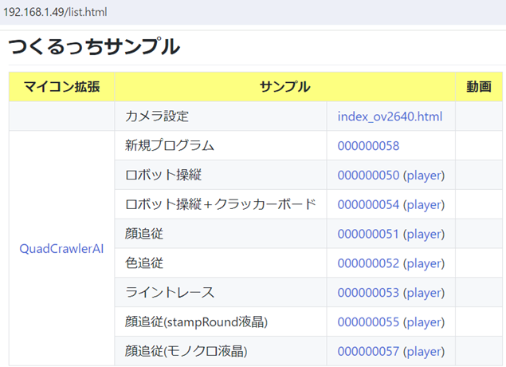
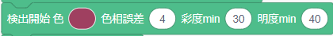
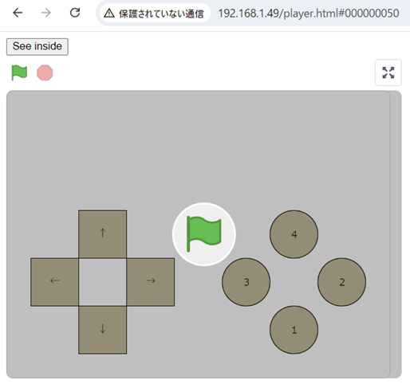

WiFi設定＆サンプルアプリ
★重要★ver1.3アップデート(2024/8/18)
ここ数年ChromeやEdgeブラウザのセキュリティ仕様がたびたび変更され より厳しくなってきました。
ブラウザアプリ「つくるっち」ではこれまでブラウザ設定変更によりカメラアクセスに対応してきたのですが、最近のChromeブラウザの更新でついに対応出来なくなってしまいました。
（サイトsohta02.sakura.ne.jpにhttpでアクセスすることができなくなりました）
そのためつくるっちアプリのアクセス方式を変更し、ブラウザからロボット上のつくるっちwebサイトに直接アクセスする方法に変更します。まずロボットをアップテートして下さい。
注意：新しいアクセス方式でもインターネットへのアクセスは必要です。学校などインターネットにアクセスできない環境では動作しません。
- ロボットの電源スイッチをOFFし、パソコン (WindowsまたはMAC) にUSBで接続
- https://sohta02.sakura.ne.jp/tukurutch/#000000058 を開く （httpsつくるっち）
- 画面左下の [QuadCrawler] - [書き込み] - [USB Serial Port] - [接続] を選択

Chrome、Edgeブラウザで動作します。その他のブラウザで動作しないときはChrome、Edgeブラウザを使用して下さい。
WiFi設定
- https://sohta02.sakura.ne.jp/tukurutch/#000000058 を開く （httpsつくるっち）
- 画面左下の [QuadCrawler] - [WiFiスキャン] を押す。[OK] にならないときはリトライ。
- [WiFi設定] のAPを選択、passにパスワードを入力、[WiFi設定] を押す。[OK] にならないときはリトライ。
- [接続モード] を押す。「つくるっちサンプル」の画面が開けばOK。

各ブロックはQuadCrawlerAIブロック一覧の上で操作して下さい、各ブロックをステージに移動しないでください。
つくるっちはスマフォ/タブレットに対応していますが、アップデートとWiFi設定はパソコン （Windows/MAC） で行う必要があります
「つくるっちサンプル」画面
「つくるっちサンプル」 画面の例です、この例ではデバイスのアドレスは 192.168.1.49 になっています。
再びつくるっちを開くときはブラウザにこのデバイスのアドレス 192.168.1.xx を入力したりブックマークすることで直接開くことができます。またこの192.168.1.xx をスマフォやタブレットのブラウザで開くことで、スマフォ/タブレットでつくるっちを開くことができます。（chrome、safariブラウザで確認）
デバイスのアドレスが変わったりわからなくなったときは WiFi設定の "httpsつくるっち" を開き、で確認して下さい。
ロボットの電源をONし、ロボット中央の青LEDが点灯することを確認して下さい。
USBケーブルはあり/なしどちらでもOKです。

サンプル 説明 カメラ設定 ESP32標準のCameraWebServerアプリです、つくるっちではないです。
カメラの設定を変えることが可能ですが、変更した設定はつくるっちには反映されません。。新規プログラム ほぼ空のつくるっちが開きます、自由にプログラミングすることができます ロボット操縦 カメラの画像を見ながらロボットを操縦することができます。
パソコンの場合：上下左右とx zボタン （ゲームパッドにも対応）
スマフォ、タブレット：画面上のタッチボタンロボット操縦+クラッカーボード ロボット操縦に2021のクラウドファンディングで付属したクラッカーボード操縦を追加 顔追従 カメラで人の顔を追い続けます 色追従 カメラで赤い物体を追い続けます ライントレース 赤いマーカーをトレースします
うまくトレースできないときはサンプルアプリの下記ブロックを調整して下さい。
顔追従(stampRound液晶) 別途表示デバイスが必要 顔追従(モノクロ液晶) 別途表示デバイスが必要
リンク 0000000xx は通常のサンプルアプリ編集画面が開きます、緑の旗で実行できます。
リンク (player) はサンプルアプリ実行画面が開きます。スマフォなど画面の狭いデバイスはこちらを使ってください。

ロボットソースコード、FW開発環境
- ロボットFWの開発環境として ArduinoIDE環境 をリリースしています。
https://sohtamei.github.io/docs/SetupArduinoIDE.html - ロボットのソースコードは下記で公開中です。
https://github.com/sohtamei/TuKuRutch.ext/tree/master/libraries/QuadCrawlerAI